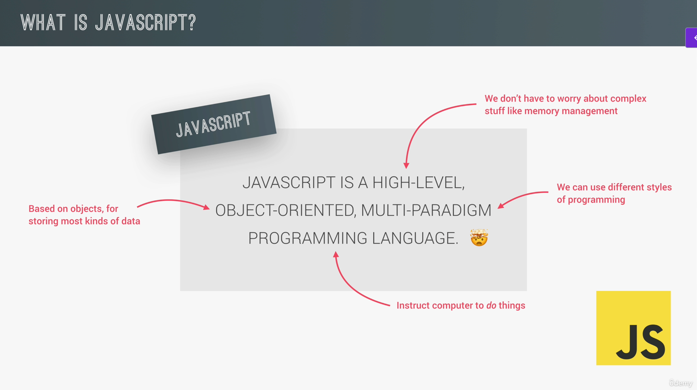
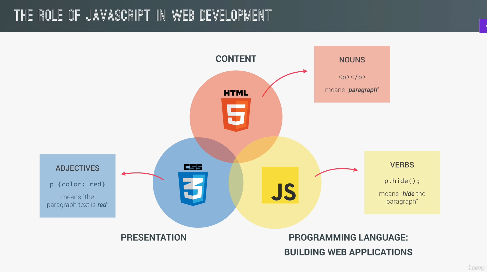
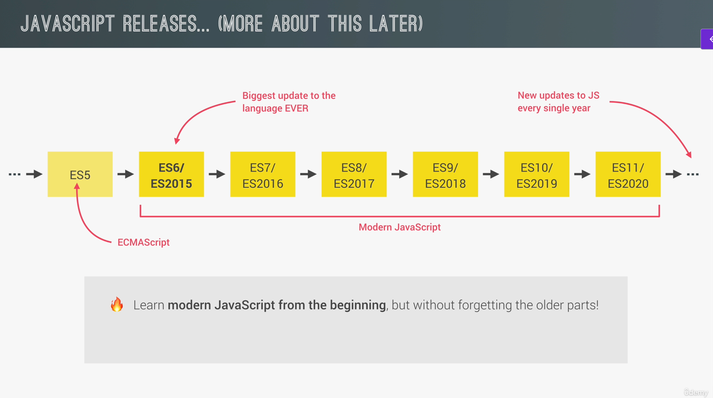
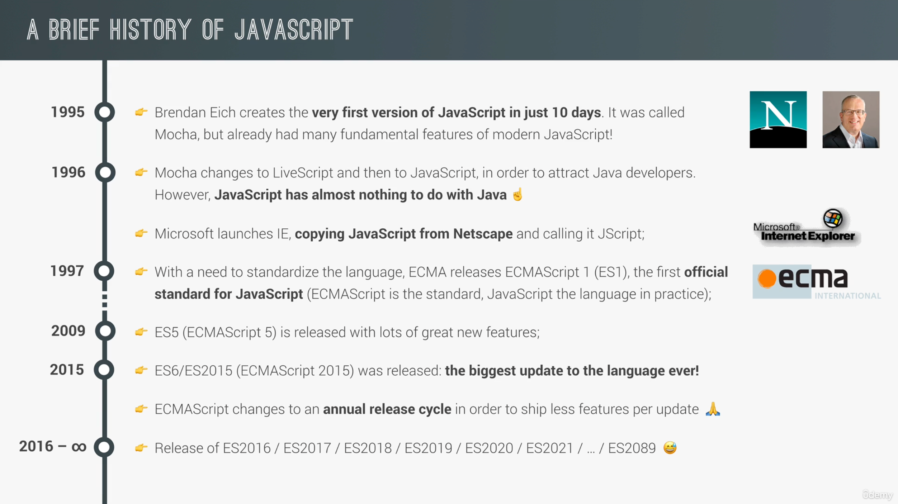
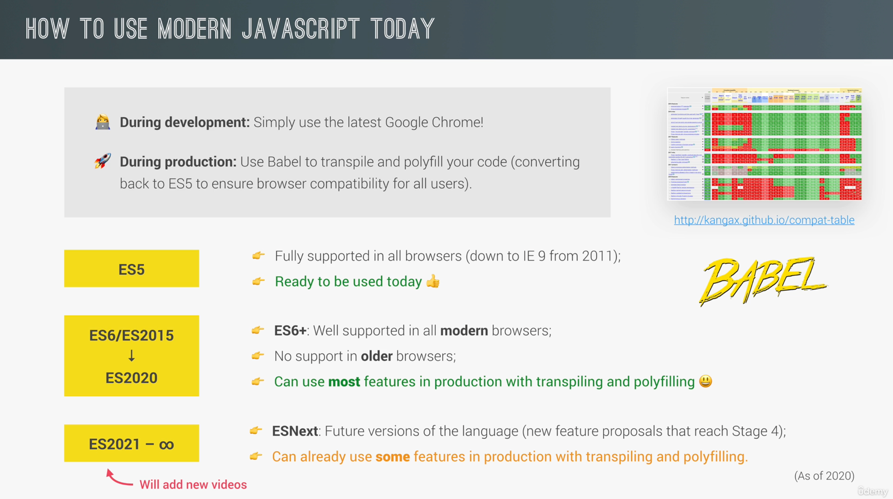
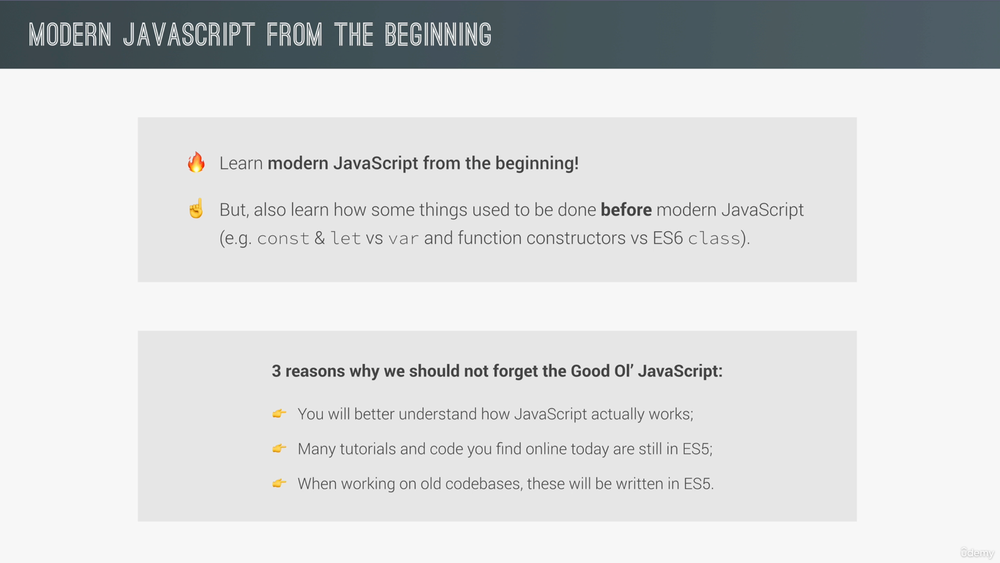

Welcome to JavaScript Course using Udemy
Course Overview
This Course is basically describes javascrit udemy course concepts, noted important points
Topics discussed
JS Introduction
Section Overview
Important Video & Screenshots




JS Funadamentals Part 1 Know More
Section Overview
This section covers below JS fundamentals part 1
- Variables are used to store data values in JavaScript.
- JavaScript has several primitive data types, including Number, String, Boolean, Undefined, Null, Symbol, and BigInt.
- JavaScript is dynamically typed, meaning variable types can change at runtime.
- The typeof operator is used to determine the data type of a variable or value.
- let and const are block-scoped variable declarations, while var is function-scoped.
- Basic operators include arithmetic, assignment, comparison, and logical operators.
- Operator precedence determines the order of evaluation in expressions.
- Strings can be created using single quotes, double quotes, or backticks (template literals).
- The if...else statement allows for conditional execution of code blocks.
- Type conversion and coercion involve converting values between different data types.
- Truthy and falsy values determine the flow of execution in conditional statements.
- The == operator performs type coercion, while === checks for strict equality.
- The prompt() function is used to get user input through a dialog box.
- Logical operators (AND, OR, NOT) are used to combine conditions.
- The switch statement allows for multiple possible execution paths based on a variable's value.
- Expressions produce values, while statements perform actions.
- The ternary operator provides a concise way to write conditional statements.
Important Video & Screenshots





JS fundamentals Part 2 Know More
Section Overview
- “use strict” enables strict mode, catching common coding mistakes and unsafe actions.
- Functions are reusable blocks of code that perform specific tasks and can take inputs and return outputs.
- Arrays are ordered collections of items that can hold multiple values in a single variable.
- Objects are collections of key-value pairs used to represent real-world entities and their characteristics.
- For loops allow code to be executed repeatedly based on a condition, commonly used for iterating over arrays.
- While loops repeatedly execute a block of code as long as a specified condition is true.
- Do...while loops guarantee that the code block will be executed at least once before checking the condition.
PPT for the entire course